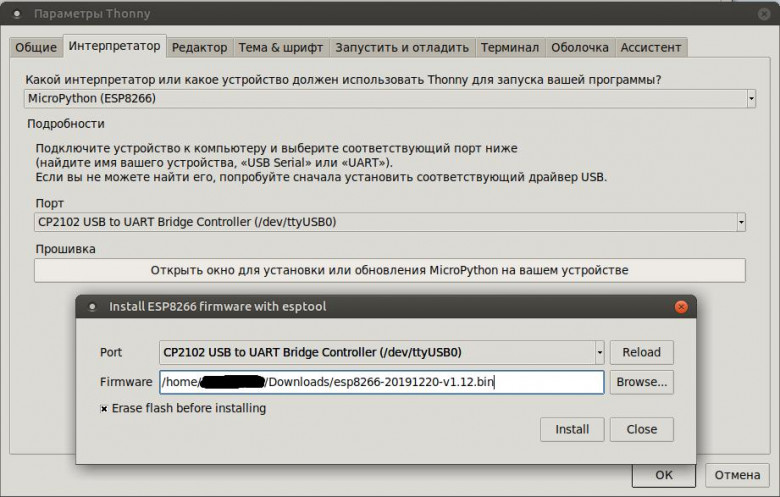
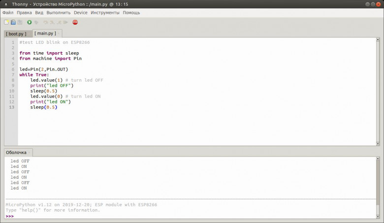

Установка micropython на ESP8266 и работа с ним под Linux (для начинающих)
Привет, Хабр!
Это мой первый опыт с микроконтроллерами в целом, и ESP8266 (в виде Nodemcu v2) в частности. Возможно, для кого-то этот опыт окажется полезным.
Почему именно micropython? Ответ простой — мой скромный опыт в области программирования ограничен Паскалем в ВУЗе, и написанием конфигурационных скриптов для Procera на Python, так что он оказался ближе всего. Примеры будут под Linux (ubuntu 18.04), но, полагаю, в других дистрибутивах Linux принципиальной разницы не будет.
Подготовка:
Ставим python3, pip и picocom, если они ещё не установлены:
sudo apt install python3 python3-pip picocom
Проверяем версию python:
python --version
Python 3.6.9
Если версия python 2.7, меняем на 3:
sudo update-alternatives --install /usr/bin/python python /usr/bin/python3 10
update-alternatives: using /usr/bin/python3 to provide /usr/bin/python (python) in auto mode
Обновляем pip и проверяем версию:
sudo pip3 install --upgrade pip
pip --version
pip 20.0.2 from /usr/local/lib/python3.6/dist-packages/pip (python 3.6)
pip3 --version
pip 20.0.2 from /usr/local/lib/python3.6/dist-packages/pip (python 3.6)
Ставим более свежую версию esptool 2.8 из pip (т.к. версия 2.1 из репозитория ubuntu выдаёт ошибку «A fatal error occurred: ESP8266 ROM does not support function erase_flash.» при прошивке):
pip3 install esptool
Качаем прошивку здесь. Я использовал stable билд 1.12.
Далее возможно два варианта:
Очищаем flash на ESP8266:
esptool.py --port /dev/ttyUSB0 erase_flash
Вывод команды:
esptool.py v2.8
Serial port /dev/ttyUSB0
Connecting....
Detecting chip type... ESP8266
Chip is ESP8266EX
Features: WiFi
Crystal is 26MHz
MAC: c8:2b:96:00:63:35
Uploading stub...
Running stub...
Stub running...
Erasing flash (this may take a while)...
Chip erase completed successfully in 9.5s
Hard resetting via RTS pin...
Заливаем прошивку:
esptool.py --port /dev/ttyUSB0 --baud 460800 write_flash --flash_size=detect 0 Downloads/esp8266-20191220-v1.12.bin
Вывод команды:
esptool.py v2.8
Serial port /dev/ttyUSB0
Connecting....
Detecting chip type... ESP8266
Chip is ESP8266EX
Features: WiFi
Crystal is 26MHz
MAC: c8:2b:96:00:63:35
Uploading stub...
Running stub...
Stub running...
Changing baud rate to 460800
Changed.
Configuring flash size...
Auto-detected Flash size: 4MB
Flash params set to 0x0040
Compressed 619828 bytes to 404070...
Wrote 619828 bytes (404070 compressed) at 0x00000000 in 9.1 seconds (effective 543.8 kbit/s)...
Hash of data verified.
Leaving...
Hard resetting via RTS pin...
И, при желании, проверяем корректность контрольной суммы:
esptool.py --port /dev/ttyUSB0 --baud 460800 verify_flash --flash_size=detect 0 Downloads/esp8266-20191220-v1.12.bin
После чего, пробуем подключиться к МК и увидеть консоль REPL:
picocom /dev/ttyUSB0 -b115200
picocom v2.2
port is : /dev/ttyUSB0
flowcontrol : none
baudrate is : 115200
parity is : none
databits are : 8
stopbits are : 1
escape is : C-a
local echo is : no
noinit is : no
noreset is : no
nolock is : no
send_cmd is : sz -vv
receive_cmd is : rz -vv -E
imap is :
omap is :
emap is : crcrlf,delbs,
Type [C-a] [C-h] to see available commands
Terminal ready
>>> help()
Welcome to MicroPython!
For online docs please visit http://docs.micropython.org/en/latest/esp8266/ .
For diagnostic information to include in bug reports execute 'import port_diag'.
Basic WiFi configuration:
import network
sta_if = network.WLAN(network.STA_IF); sta_if.active(True)
sta_if.scan() # Scan for available access points
sta_if.connect("<AP_name>", "<password>") # Connect to an AP
sta_if.isconnected() # Check for successful connection
# Change name/password of ESP8266's AP:
ap_if = network.WLAN(network.AP_IF)
ap_if.config(essid="<AP_NAME>", authmode=network.AUTH_WPA_WPA2_PSK, password="<password>")
Control commands:
CTRL-A -- on a blank line, enter raw REPL mode
CTRL-B -- on a blank line, enter normal REPL mode
CTRL-C -- interrupt a running program
CTRL-D -- on a blank line, do a soft reset of the board
CTRL-E -- on a blank line, enter paste mode
For further help on a specific object, type help(obj)
>>>
П.С.: для выхода из picocom использовать Ctrl+a и сразу Ctrl+x
Хотя первый вариант вполне работоспособен (по крайней мере, помигать светодиодом можно и в нём), с IDE все же гораздо удобнее. Я попробовал пару вариантов, в итоге остановился на Thonny.
Установка:
Ставим python3-tk из репозиториев, и собственно Thonny через pip:
sudo apt install python3-tk
sudo pip3 install thonny
Залить прошивку на МК можно непосредственно через Thonny:

После чего, моргать светодиодом становится существенно удобнее:

Итого
На выходе имеем МК esp8266 с прошитым micropython, и удобную в использовании IDE для работы с ним.
П.С.: вторая часть (Самоходная платформа на МК esp8266 с micropyhon)
Теги:
Хабы: